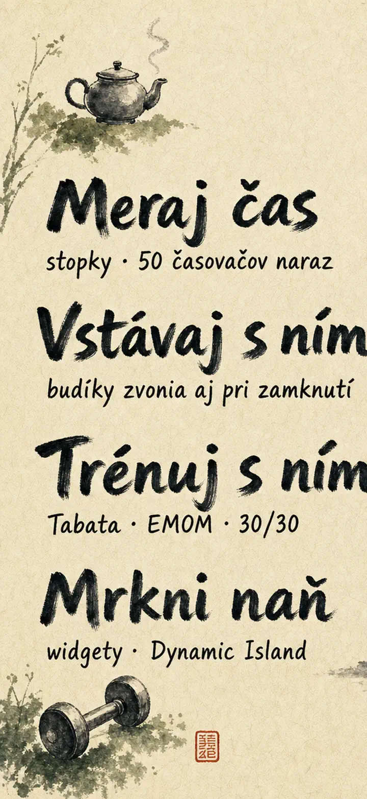
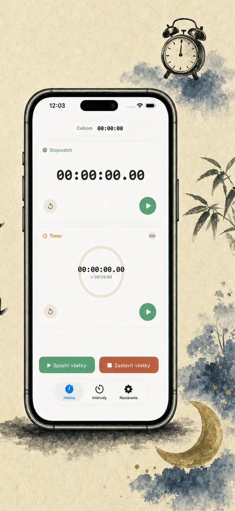
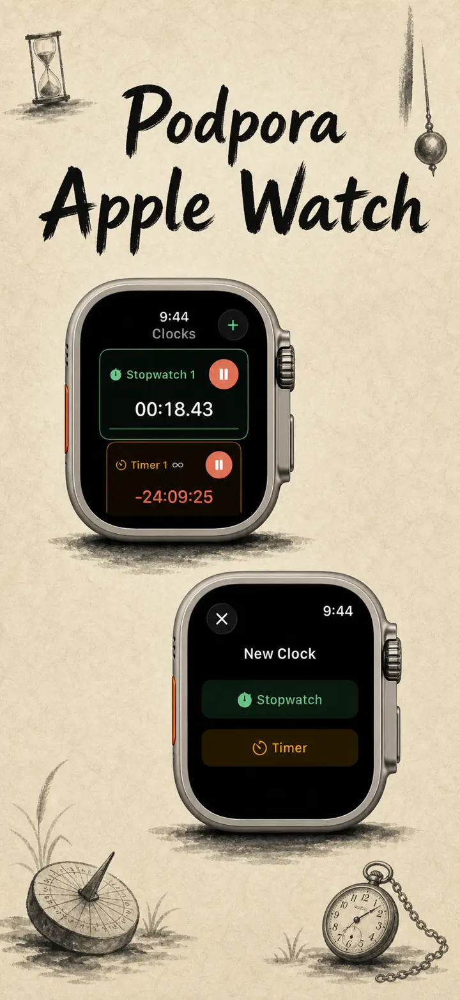
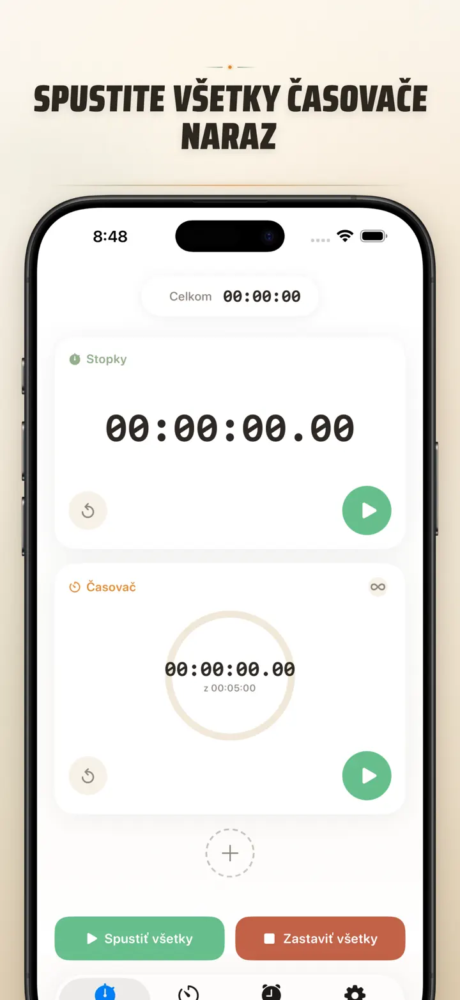
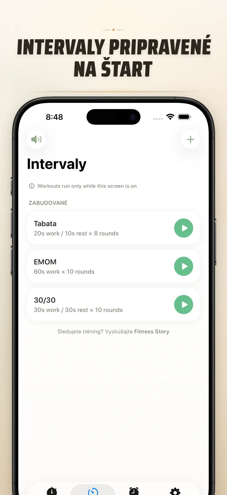
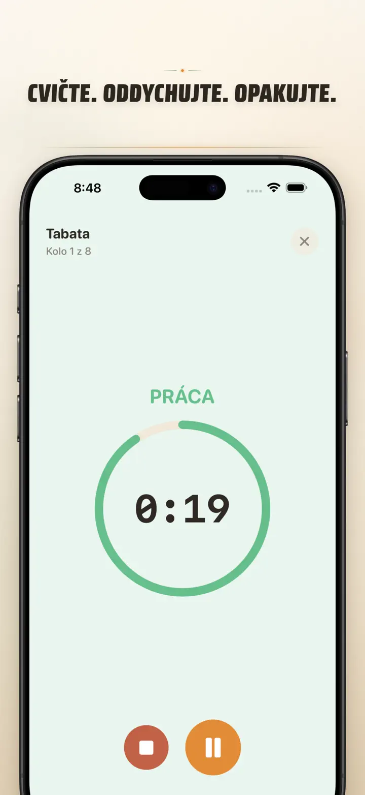
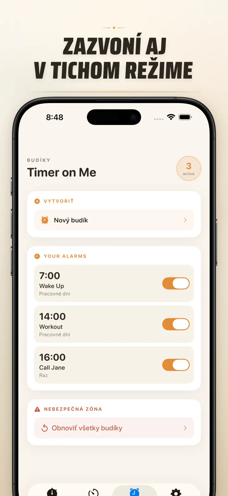

Timer on Me
Časovač, budík, stopky & HIIT
Teraz s budíkmi s dátumom: jednorazový budík na ľubovoľný dátum a čas, vedľa opakujúcich sa budíkov, 50 časovačov naraz, HIIT & Tabata a Apple Watch.
Stiahnuť v App Store
O aplikácii
Timer on Me je tvoj multi-časovač a stopky pre iPhone, iPad a Apple Watch. Až 50 nezávislých časovačov naraz, presné intervalové tréningy a budíky, ktoré naozaj zvonia — aj pri zamknutom iPhone alebo zatvorenej aplikácii.
BUDÍKY
- Buzenie a pripomienky s vlastnými názvami a rozvrhmi na dni v týždni
- Poháňané AlarmKit — zvonia aj pri zamknutom iPhone alebo zatvorenom Timer on Me
- Nastaviteľné odloženie (3 / 5 / 9 / 15 / 30 minút) alebo bez odloženia
- Vyber si z vstavaných tónov alebo importuj vlastné zvuky
- Zapínanie a vypínanie jedným ťuknutím v dedikovanej záložke Budíky
TRÉNING A INTERVALY
- Hotové presety Tabata, EMOM a 30/30 — dve klepnutia a ideš
- Vlastný editor intervalov: práca, pauza a kolá v minútach a sekundách
- Celoobrazovkový režim tréningu so zmenou farby pre každú fázu a tichým režimom
- Pauza, preskočenie a pokračovanie uprostred relácie bez straty postupu
APPLE WATCH
- Skutočná natívna aplikácia watchOS, nie iba zrkadlenie z telefónu
- Viac stopiek a časovačov bežiacich na zápästí súčasne
- Stopky s presnosťou na stotiny sekundy
- Vlastné komplikácie ciferníka na spustenie jediným ťuknutím
- Funguje samostatne, aj keď iPhone nie je poblíž
50 ČASOVAČOV NARAZ
- Až 50 nezávislých časovačov a stopiek v jednej relácii
- Spúšťaj, zastavuj a nuluj jednotlivo alebo v skupinách
- Automatické opakovanie pre cyklické kolá
- Časovače pokračujú aj po nule na zaznamenanie nadčasu
- Farebné ukazovatele priebehu: žltá pri 50 %, červená pri 10 %
- Potiahni pre zoradenie, pomenuj po svojom
SPOĽAHLIVÉ UPOZORNENIA
- AlarmKit: budíky zvonia, aj keď je iPhone zamknutý alebo aplikácia zatvorená
- Dynamic Island a Live Activity — postup na jediný pohľad
- Widgety na domovskej obrazovke: malý, stredný, veľký
- Vstavané tóny: zvončeky, vtáčí spev, vintage telefóny
- Ťukni a vypočuj pred výberom
- Režim „Udržať obrazovku zapnutú" na dlhé relácie
PRISPÔSOB SI A ZDIEĽAJ
- Ukáž alebo skry desatinné miesta, súčty a percentá
- Ulož a prepíš presety, vráť ich jedným ťuknutím
- Exportuj ako CSV, JSON alebo obyčajný text
- Zdieľaj s kolegami, študentmi alebo trénerom
PRE iPhone, iPad A APPLE WATCH
- Rozloženie prispôsobené každej veľkosti obrazovky
- Split View na iPade
- 34 jazykov
IDEÁLNE NA
- HIIT, Tabatu, CrossFit a kruhový tréning
- Kolá boxu, kickboxu a bojových športov
- Pomodoro, maturita, prijímačky a sústredenie
- Prípravu kávy, čaju, vajíčok, halušiek, kapustnice a časy v rúre
- Jogu, pilates, meditáciu a dychové cvičenia
- Skúšky prezentácií a cvičenie na nástroji
- Hodiny, workshopy a skupinové aktivity
- Spoločenské hry a večery s priateľmi
Stiahni si Timer on Me a vezmi každú minútu pod kontrolu — v posilňovni, v práci alebo doma.
Zásady ochrany osobných údajov: https://masawata.net/privacy-policy.html Podmienky služby: https://www.apple.com/legal/internet-services/itunes/dev/stdeula/
Snímky obrazovky






Timer on Me
Teraz s budíkmi s dátumom: jednorazový budík na ľubovoľný dátum a čas, vedľa opakujúcich sa budíkov, 50 časovačov naraz, HIIT & Tabata a Apple Watch.
Stiahnuť v App Store